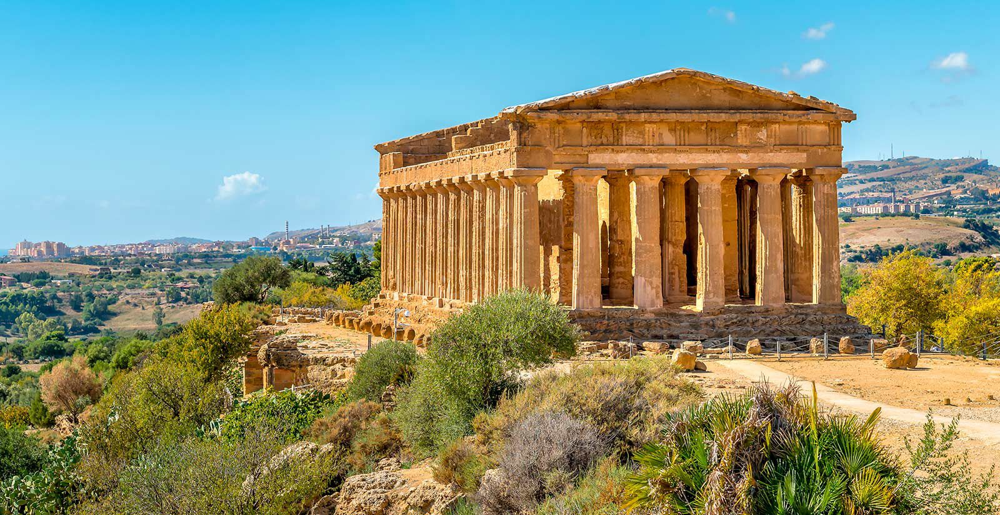
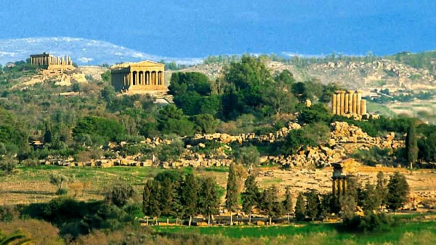

La Valle dei Templi è uno dei più grandi e famosi siti archeologici al mondo. Si trova su una collina rocciosa ed è l'antica acropoli della città di Akragas. Nel 1997 è stata dichiarata Patrimonio dell'Umanità dall'UNESCO per il suo grande valore storico e culturale. È una delle testimonianze più spettacolari dell'antichità che possiamo trovare in Italia, insieme a Pompei ed Ercolano. La Valle dei Templi si trova a pochi passi dal centro di Agrigento, su un altopiano che si affaccia sul mare, ed è famosa per i suoi templi dorici, che sono tra i migliori esempi di architettura greca. Questi templi sono diventati il simbolo di Agrigento e sono considerati tra le più impressionanti testimonianze della Magna Grecia in Sicilia e in Italia. La storia di questa valle inizia nel VI secolo a.C., quando la città di Akragas fu fondata da coloni di Gela e Rodi. La città prosperò nel V secolo a.C., raggiungendo il suo massimo splendore grazie alla vittoria contro i Cartaginesi nella battaglia di Himera del 480 a.C. In questo periodo furono costruiti i templi che possiamo ancora vedere oggi. Nonostante fosse distrutta dai Cartaginesi nel 406 a.C., Akragas si rifece sotto i Romani, che la rinominarono Agrigentum. Oggi, il parco archeologico ospita alcuni dei templi meglio conservati della Sicilia, e ci racconta la grandezza dell'antica città. Nel 1997, l'UNESCO ha riconosciuto la Valle dei Templi come un esempio straordinario dell'arte e della cultura greca, grazie anche alla sua ottima conservazione.
La valle si estende su circa 1300 ettari e offre una vista spettacolare. Anche se gran parte della città antica è ancora nascosta sotto terra, i templi che sono stati riportati alla luce sono davvero emozionanti, proprio come quando il sito fu riscoperto nel XVIII secolo dopo secoli di abbandono. La visita alla Valle inizia dalla cima della Rupe Atenea, da dove si può ammirare un panorama incredibile del sito e vedere i resti del Tempio di Demetra, che oggi è integrato nella chiesa medievale di San Biagio. Scendendo lungo la Via Panoramica dei Templi, il primo tempio che incontriamo è quello di Giunone, costruito intorno al 450 a.C., famoso per le sue 30 colonne alte più di 6 metri. Proseguendo, si arriva al Tempio della Concordia, uno dei templi dorici meglio conservati al mondo. Il tempio ha 78 colonne ed è famoso per l'imponente architettura, che è sopravvissuta grazie alla trasformazione in chiesa cristiana nel VI secolo d.C. Il Tempio di Eracle è il più antico di tutti e risale alla fine del VI secolo a.C., ma oggi rimangono solo otto colonne, ricostruite nel XX secolo. Poco più in basso si trova la cosiddetta "Tomba di Terone", che è un monumento funerario romano erroneamente attribuito al tiranno di Akragas. Il Tempio di Zeus, uno dei più grandi dell'antica Grecia, fu costruito per celebrare la vittoria nella battaglia di Himera. Un esempio dei telamoni, enormi statue alte 8 metri, è visibile accanto alle rovine, mentre l'originale è esposto nel Museo Archeologico di Agrigento. L'ultimo tempio che vediamo è il Tempio dei Dioscuri, che oggi è simbolo della città di Agrigento. Le quattro colonne che ne rimangono sono state ricostruite nel XIX secolo.
Ho scelto di parlare della Valle dei Templi perché mi affascina la storia greca e la sua influenza sulla nostra cultura. Questo sito rappresenta una delle voci più potenti e tangibili di quel periodo, e passeggiare tra i templi ti fa sentire davvero vicino a una civiltà che ha avuto un impatto profondo sulla storia dell'umanità. La Valle dei Templi non è solo un luogo da visitare, ma una porta aperta sul passato che ci racconta storie di arte, potere e religione.